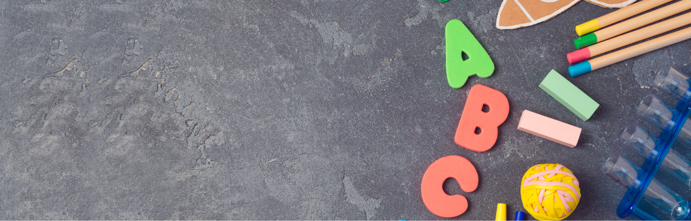

Listen gibt es im Internet viele. „Was dein Kind vor der Schule können muss" – drei Klicks und du hast zwanzig davon. Das Problem: Die meisten verwechseln Schulvorbereitung mit Vorziehen von Schulinhalten. Lesen lernen, Zahlen schreiben, Buchstaben kennen – all das klingt sinnvoll, ist aber nicht das, was einen guten Schulstart ausmacht.
Diese Liste ist anders. Sie orientiert sich daran, was Entwicklungspsychologie und Grundschulpädagogik wirklich über einen gelingenden Schulstart sagen. Und sie macht ehrlich klar, was du getrost von deiner gedanklichen Checkliste streichen kannst.
Warum diese Liste anders ist
Schulvorbereitung bedeutet nicht, Schulinhalte vorwegzunehmen. Es bedeutet, ein Kind so zu begleiten, dass es die inneren Voraussetzungen mitbringt, um in der Schule lernen zu können. Das ist ein großer Unterschied.
Ein Kind, das seinen Namen schreiben kann, aber bei jeder Herausforderung in Tränen ausbricht, hat es schwerer als ein Kind, das zwar keine einzige Zahl kennt, aber weiß: Ich kann mir Hilfe holen, und ich gebe nicht auf. Lernen braucht eine Basis – und diese Basis ist nicht kognitiv. Sie ist emotional, sozial und körperlich.
Die 10 Dinge, die wirklich zählen
-
Sich selbst an- und ausziehen Jacke aufhängen, Schuhe zubinden, Reißverschluss öffnen – das klingt banal, macht aber im Schulalltag einen riesigen Unterschied. Selbstständigkeit im Körperbereich stärkt das Selbstwirksamkeitsgefühl und entlastet das Kind in neuen Situationen.
-
Die eigenen Bedürfnisse äußern „Ich muss auf die Toilette." „Ich verstehe das nicht." „Ich brauche Hilfe." Diese Sätze zu sagen, wenn nötig, ist eine Schlüsselfähigkeit. Kinder, die das können, kommen durch den Schultag viel leichter durch – und Lehrerinnen können ihnen viel besser helfen.
-
Kurze Wartezeiten aushalten Im Unterricht geht nicht alles sofort. Wer an der Reihe ist, muss auf den richtigen Moment warten. Das ist keine Selbstverständlichkeit – und keine Frage von Disziplin, sondern von reifender Impulskontrolle, die Eltern durch klare Alltagsstrukturen unterstützen können.
-
Mit Gleichaltrigen spielen und streiten Konflikte erleben, aushalten, lösen – und danach wieder ins Spiel zurückfinden. Kinder, die das in der Kita üben konnten, haben in der Schule einen enormen Startvorteil. Soziale Kompetenz wächst im echten Spiel, nicht im Übungsheft.
-
Sich auf eine Aufgabe konzentrieren Nicht stundenlang – aber 10 bis 15 Minuten bei einer Sache bleiben: ein Puzzle fertig legen, ein Bild ausmalen, ein Spiel zu Ende spielen. Konzentration ist ein Muskel, der durch freies, selbstgewähltes Spiel am effektivsten wächst.
-
Misserfolge aushalten Der Turm fällt um. Das Spiel ist verloren. Das Bild ist nicht so geworden wie gedacht. Wie dein Kind damit umgeht – ob es sich wieder aufrafft oder komplett einbricht – ist einer der stärksten Vorhersagewerte für Schulerfolg (Dweck, 2006). Resilienz entsteht durch echte Erfahrungen, nicht durch Schutz vor Frust.
-
Sich von einer Bezugsperson trennen Die Fähigkeit, sich morgens zu verabschieden und zu wissen: Mama oder Papa kommt wieder – das ist Bindungssicherheit in Aktion. Kinder, die das können, sind im Unterricht präsenter, neugieriger und offener für neue Beziehungen zu Lehrpersonen.
-
Geschichten verstehen und nacherzählen Nicht perfekt, nicht vollständig – aber: Was ist passiert? Wer war dabei? Was kam zuerst? Sprachverständnis und die Fähigkeit, Erlebnisse sprachlich zu strukturieren, sind entscheidend für das spätere Lesen- und Schreiben-Lernen.
-
Mengen und Unterschiede wahrnehmen Mehr oder weniger, größer oder kleiner, gleich oder verschieden – das ist die Basis für mathematisches Denken. Das Zählen bis 20 ist dabei weit weniger wichtig als das intuitive Mengenverständnis, das durch Spielen, Kochen, Sortieren und Bauen entsteht.
-
Neugier und Freude am Entdecken zeigen Das ist vielleicht die wichtigste Fähigkeit von allen – und gleichzeitig die zerbrechlichste. Kinder, die mit echter Neugier in die Schule kommen, lernen schneller und tiefer. Diese Neugier entsteht in einer Kindheit, die Fragen ernst nimmt, Ausprobieren erlaubt und Fehler als selbstverständlichen Teil des Lernens behandelt.

3 Dinge, die dein Kind NICHT braucht
Genauso wichtig wie das Was ist das Weglassen. Denn viele Eltern investieren Zeit und Energie in Dinge, die für den Schulstart tatsächlich nicht notwendig sind – und manchmal sogar hinderlich, weil sie Druck erzeugen, wo Entspannung gefragt wäre.
| ❌ Das braucht dein Kind NICHT | ✓ Was stattdessen hilft |
|---|---|
| Lesen oder Schreiben lernen vor der Schule | Geschichten hören, selbst erzählen, mit Sprache spielen |
| Zahlen und Buchstaben auswendig kennen | Mengen erleben, sortieren, vergleichen – im echten Leben |
| Stundenlang still sitzen können | Bewegung, Spiel und Selbststeuerung im Alltag üben |
Wenn dein Kind all diese Dinge noch nicht kann: Das ist vollkommen normal. Die Schule ist dafür da, sie zu lehren. Deine Aufgabe als Elternteil ist es nicht, der Schule zuvorzukommen – sondern das Fundament zu legen, auf dem Lernen möglich wird.
So kannst du diese 10 Fähigkeiten im Alltag stärken
- Selbstständigkeit fördern: Lass dein Kind sich selbst anziehen, seinen Teller abräumen, seine Sachen packen – auch wenn es länger dauert.
- Gespräche führen: Frag nach dem Tag, hör zu, lass dein Kind Geschichten zu Ende erzählen – auch die langen.
- Freies Spiel ermöglichen: Unstrukturierte Zeit ohne Bildschirm ist Entwicklungszeit. Langeweile darf sein.
- Frust zulassen: Nicht sofort helfen oder lösen. Erst Gefühle begleiten, dann gemeinsam überlegen.
- Rituale schaffen: Verlässliche Abläufe geben Sicherheit und trainieren Selbstregulation ganz nebenbei.
Täglich neue Impulse auf Instagram
Folge uns für entwicklungspsychologisch fundierte Tipps rund um Schulreife, Vorschulzeit und entspannten Schulstart – ohne Druck, dafür mit echtem Wissen und viel Herz.
@eduleo.vorschule folgen